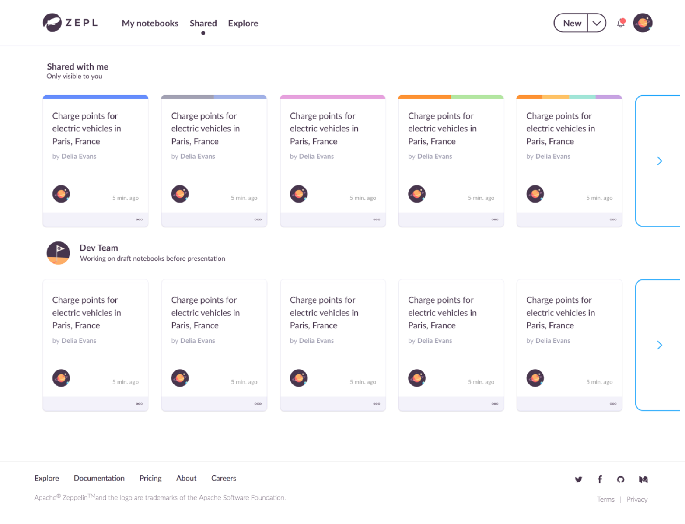
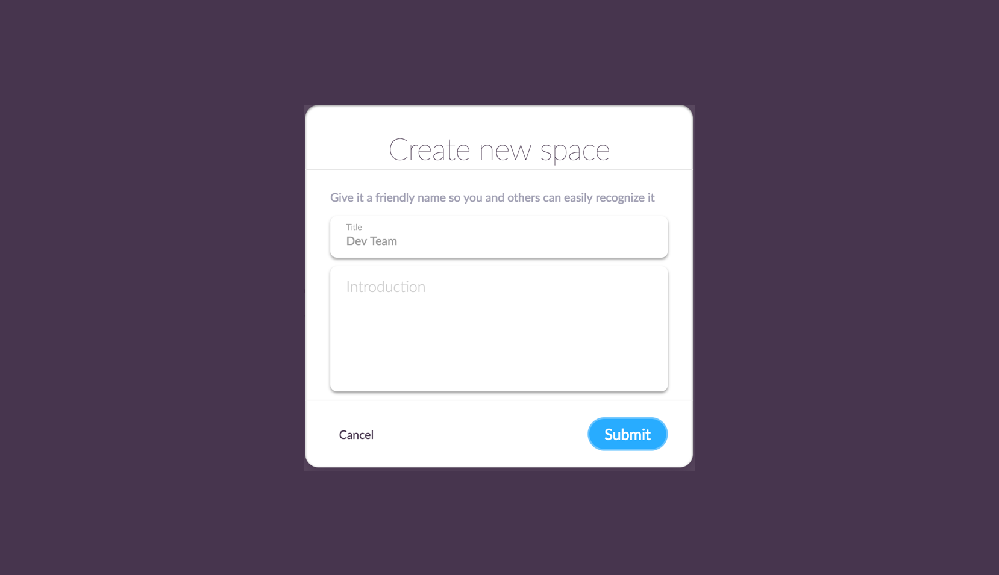
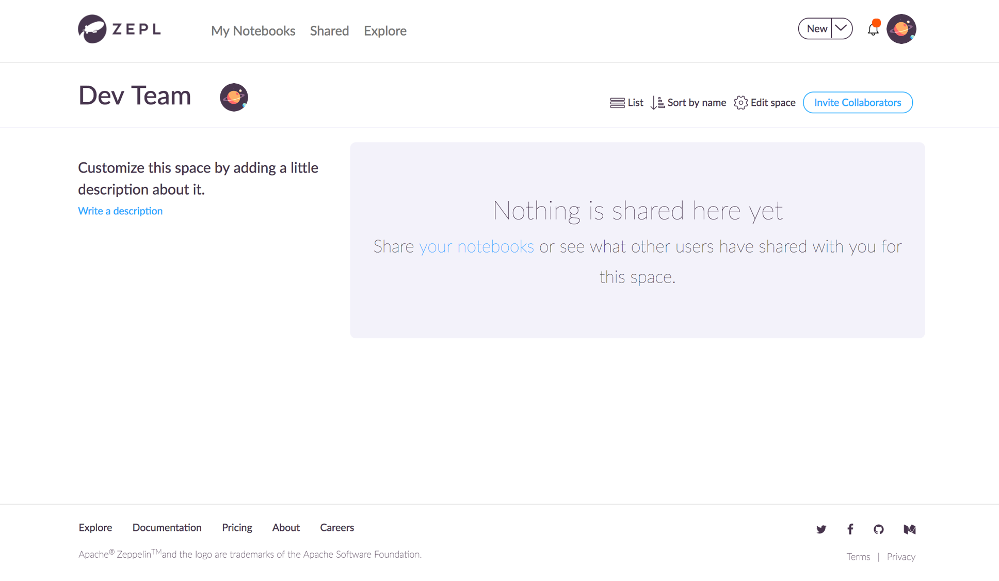
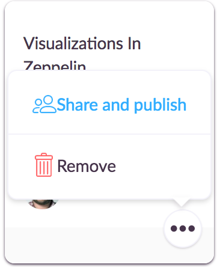
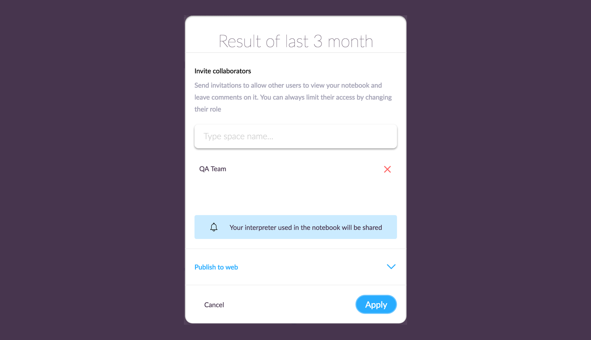
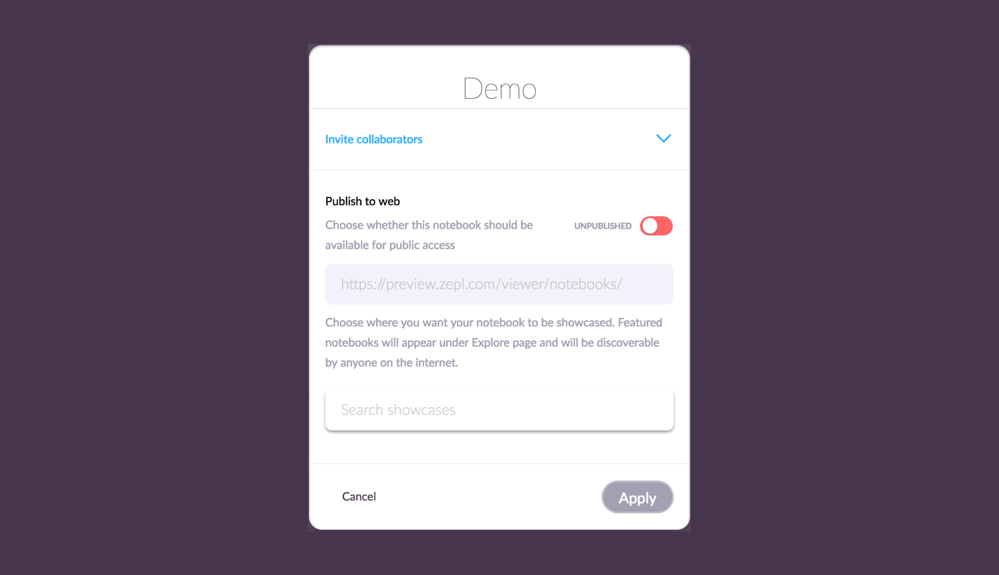
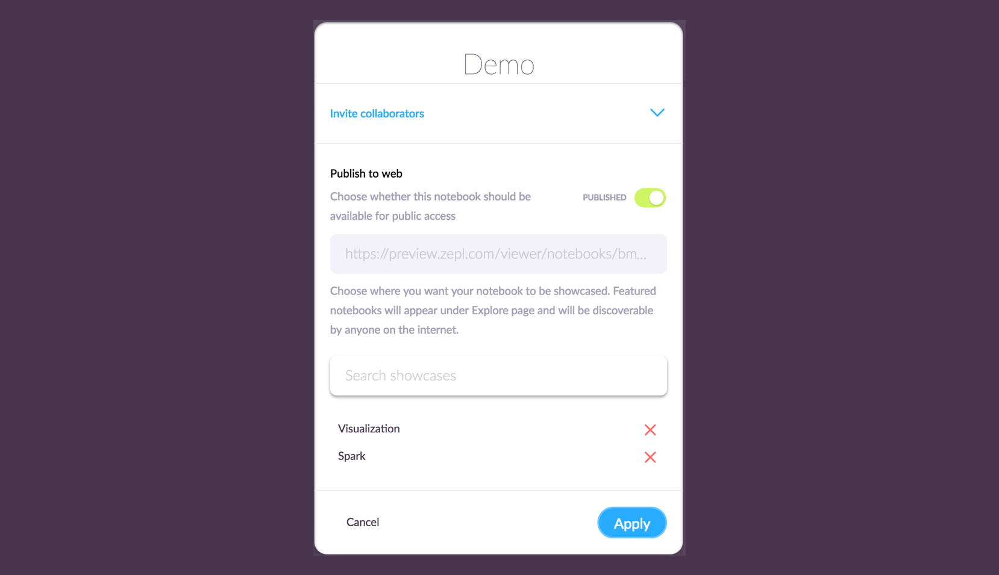
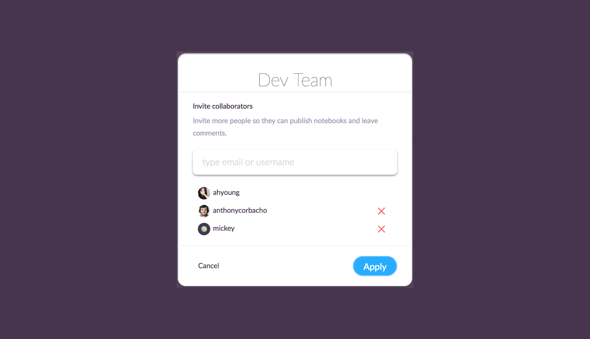
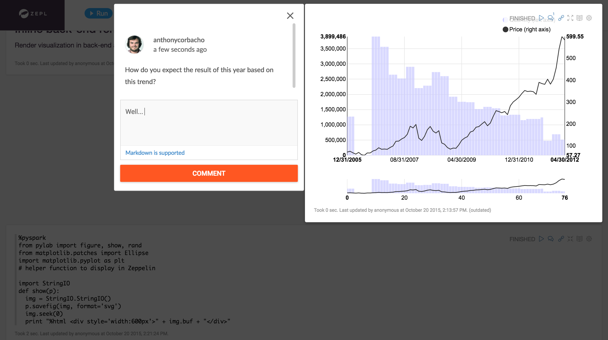

Sharing your Notebooks
In this section, we will explain how you can create a new space and share Apache Zeppelin notebooks to communicate with your team members.
What is Space?
ZEPL Space is a kind of room for sharing notebooks. You can gather your own and shared notebooks shared from your team members efficiently in Space. When you create a space, you can invite your team members. Only invited people can have an access permission to the shared notebooks.
You can find the list of Spaces in Shared page.

Create a new Space
To create a new Space, click Space in the dropdown menu, then type a Space name with short description.

Now you're an owner of this Space. You can invite collaborators and manage the shared notebooks in here.

Sharing Notebooks to the Space
You can share/publish the notebook in Shared main page.

Or you can find Share and Publish button in top-right corner of each notebook and directly do in it.

Find proper place by typing a Space name.
Publishing Notebooks to web
You can set your notebook to public or private mode in the same dialog used when you share a notebook.

The default value of each notebook is Unpublished. It means the notebook is set as private mode. So no one would be able to access the notebook, except the ZEPL users that it has been shared with, and public URI won't work in this status.

If you want to make your notebook public and anyone can access to it, just slide the toggle bar. It will generate the public URL for the notebook. Just copy to the clipboard and visit the site.
Optionally you can select the showcase where your public notebook is located. Of course you can choose multiple showcases at a time. If you have no idea about Showcases yet, please read What is the showcase? section first. Then you can see your notebook under the showcase you chose in Explore tab.
Inviting people to the Space
In the space, you can invite collaborators. Once someone is added to your space, he/ she can see your space in his Shared page.

Give some feedback by leaving comments on the shared notebook. You can find conversation button at the top of the each paragraph and start a conversation with your people about the report.
